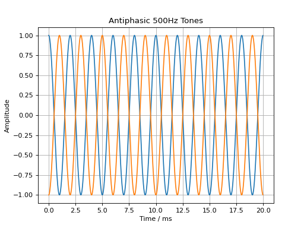
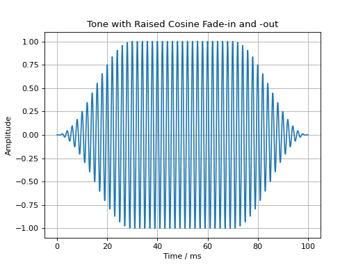
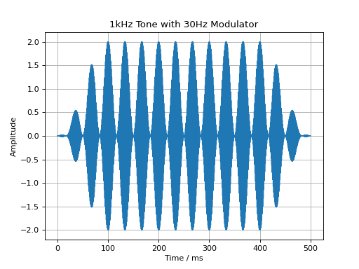
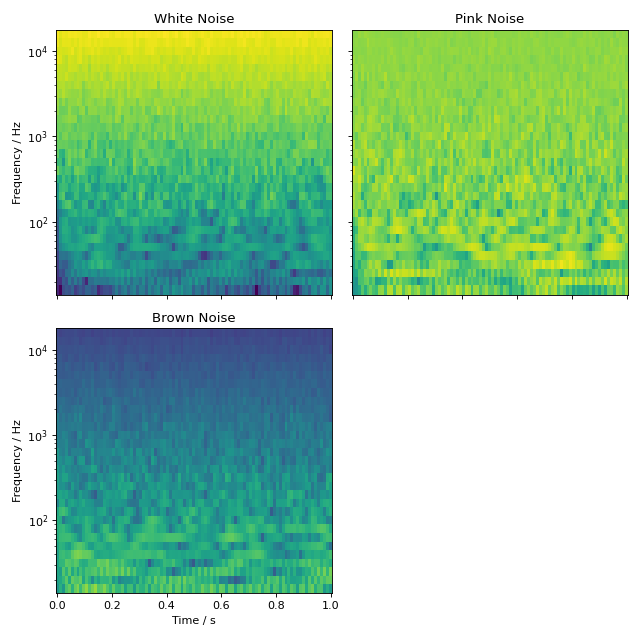
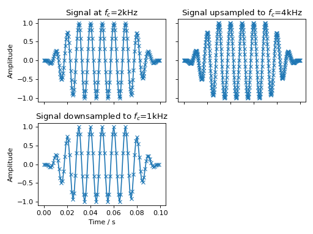
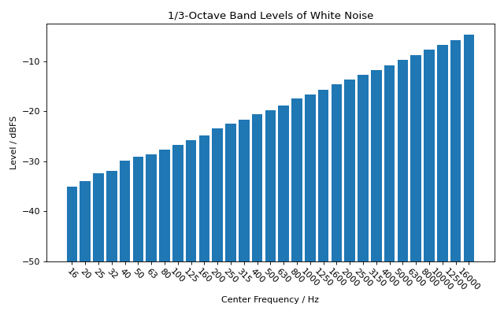
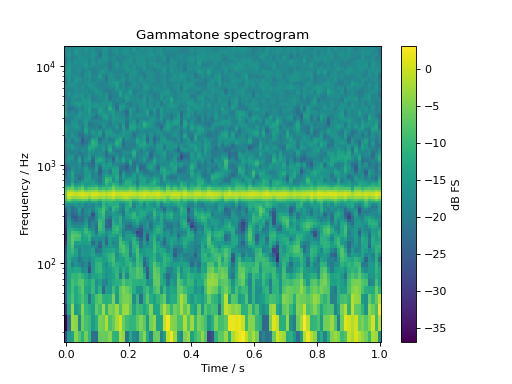
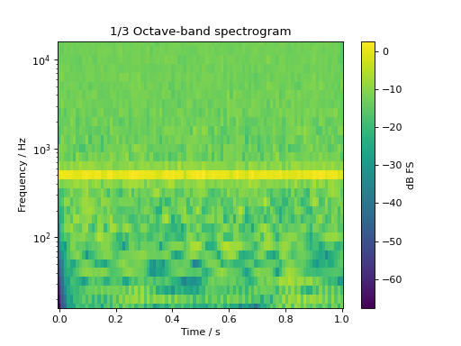
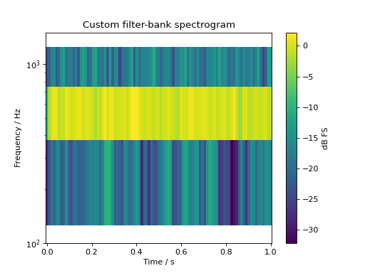
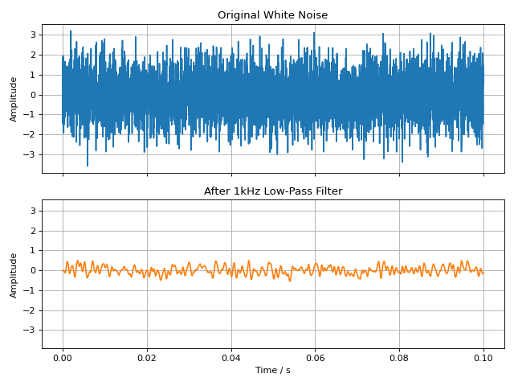

User Guide
This user guide is intended to give a quick overview of the main features of audiotoolbox, as well as how to use them. For more details, please see the Reference Manual.
Working with Stimuli in the Time Domain
audiotoolbox uses the audiotoolbox.Signal class to represent
stimuli in the time domain. This class provides an easy-to-use method for
modifying and analyzing signals.
Creating Signals
An empty, 1-second long signal with two channels at 48 kHz is initialized by calling:
>>> import audiotoolbox as audio
>>> import numpy as np
>>>
>>> signal = audio.Signal(n_channels=2, duration=1, fs=48000)
audiotoolbox supports an unlimited number of channels, which can also be arranged across multiple dimensions. For example:
>>> signal = audio.Signal(n_channels=(2, 3), duration=1, fs=48000)
By default, modifications are applied to all channels simultaneously. The following two lines add 1 to all samples in all channels:
>>> signal = audio.Signal(n_channels=2, duration=1, fs=48000)
>>> signal += 1
Individual channels can be addressed easily using the
audiotoolbox.Signal.ch indexer:
>>> signal = audio.Signal(n_channels=(2, 3), duration=1, fs=48000)
>>> signal.ch[0] += 1
This will add 1 only to the first channel group. The ch indexer also
allows for slicing:
>>> signal = audio.Signal(n_channels=3, duration=1, fs=48000)
>>> signal.ch[1:] += 1
This will add 1 to all but the first channel. Internally, the
audiotoolbox.Signal class is a numpy.ndarray where the first
dimension is the time axis (number of samples). The subsequent dimensions
define the channels:
>>> signal = audio.Signal(n_channels=(2, 3), duration=1, fs=48000)
>>> signal.shape
(48000, 2, 3)
The number of samples and the number of channels can be accessed through
properties of the audiotoolbox.Signal class:
>>> signal = audio.Signal(n_channels=(2, 3), duration=1, fs=48000)
>>> print(f'No. of samples: {signal.n_samples}, No. of channels: {signal.n_channels}')
No. of samples: 48000, No. of channels: (2, 3)
The time axis can be accessed directly using the
audiotoolbox.Signal.time property:
>>> signal = audio.Signal(n_channels=1, duration=1, fs=48000)
>>> signal.time
array([0.00000000e+00, 2.08333333e-05, 4.16666667e-05, ...,
9.99937500e-01, 9.99958333e-01, 9.99979167e-01])
It’s important to understand that all modifications are in-place, meaning that calling a method does not return a changed copy of the signal but directly changes the signal’s data:
>>> signal = audio.Signal(n_channels=1, duration=1, fs=48000)
>>> signal.add_tone(frequency=500)
>>> signal.var()
0.49999999999999994
Creating a copy of a Signal requires the explicit use of the
audiotoolbox.Signal.copy() method. The
audiotoolbox.Signal.copy_empty() method can be used to create an
empty copy with the same shape as the original:
>>> signal = audio.Signal(n_channels=1, duration=1, fs=48000)
>>> signal2 = signal.copy_empty()
Basic Signal Modifications
Basic signal modifications, such as adding a tone or noise, are directly
available as methods. Tones are easily added through the
audiotoolbox.Signal.add_tone() method. A signal with two antiphasic
500 Hz tones in its two channels is created by running:
import audiotoolbox as audio
import numpy as np
import matplotlib.pyplot as plt
sig = audio.Signal(n_channels=2, duration=20e-3, fs=48000)
sig.ch[0].add_tone(frequency=500, amplitude=1, start_phase=0)
sig.ch[1].add_tone(frequency=500, amplitude=1, start_phase=np.pi)
plt.plot(sig.time * 1e3, sig)
plt.xlabel('Time / ms')
plt.ylabel('Amplitude')
plt.title('Antiphasic 500Hz Tones')
plt.grid(True)
plt.show()
(Source code, png, hires.png, pdf)
{kind=link}
{kind=link}

Fade-in and fade-out ramps with different shapes can be applied using the
audiotoolbox.Signal.add_fade_window() method:
import audiotoolbox as audio
import matplotlib.pyplot as plt
sig = audio.Signal(n_channels=1, duration=100e-3, fs=48000)
sig.add_tone(frequency=500, amplitude=1, start_phase=0)
sig.add_fade_window(rise_time=30e-3, type='cos')
plt.plot(sig.time * 1e3, sig)
plt.xlabel('Time / ms')
plt.ylabel('Amplitude')
plt.title('Tone with Raised Cosine Fade-in and -out')
plt.grid(True)
plt.show()
(Source code, png, hires.png, pdf)
{kind=link}
{kind=link}

Similarly, a cosine modulator can be added through the
audiotoolbox.Signal.add_cos_modulator() method:
import audiotoolbox as audio
import matplotlib.pyplot as plt
sig = audio.Signal(n_channels=1, duration=500e-3, fs=48000)
sig.add_tone(1000)
sig.add_cos_modulator(frequency=30, m=1)
sig.add_fade_window(100e-3)
plt.plot(sig.time * 1e3, sig)
plt.xlabel('Time / ms')
plt.ylabel('Amplitude')
plt.title('1kHz Tone with 30Hz Modulator')
plt.grid(True)
plt.show()
(Source code, png, hires.png, pdf)
{kind=link}
{kind=link}

Generating Noise
audiotoolbox provides multiple functions to generate noise. This example
adds white, pink, and brown Gaussian noise to a signal and plots their
spectrograms. The noise variance and a seed for the random number
generator can be defined by passing the respective arguments (see
audiotoolbox.Signal.add_noise()).
import audiotoolbox as audio
import matplotlib.pyplot as plt
white_noise = audio.Signal(1, 1, 48000).add_noise()
pink_noise = audio.Signal(1, 1, 48000).add_noise(ntype='pink')
brown_noise = audio.Signal(1, 1, 48000).add_noise(ntype='brown')
wspec, fc = white_noise.time_frequency.octave_band_specgram(oct_fraction=3)
pspec, fc = pink_noise.time_frequency.octave_band_specgram(oct_fraction=3)
bspec, fc = brown_noise.time_frequency.octave_band_specgram(oct_fraction=3)
norm = plt.Normalize(
vmin=min([wspec.min(), pspec.min(), bspec.min()]),
vmax=max([wspec.max(), pspec.max(), bspec.max()])
)
fig, ax = plt.subplots(2, 2, sharex='all', sharey='all', figsize=(8, 8))
ax[0, 0].set_title('White Noise')
ax[0, 0].pcolormesh(wspec.time, fc, wspec.T, norm=norm)
ax[0, 1].set_title('Pink Noise')
ax[0, 1].pcolormesh(pspec.time, fc, pspec.T, norm=norm)
ax[1, 0].set_title('Brown Noise')
ax[1, 0].pcolormesh(bspec.time, fc, bspec.T, norm=norm)
ax[1, 0].set_xlabel("Time / s")
for a in ax[:, 0]:
a.set_ylabel('Frequency / Hz')
for a in ax.flatten():
a.set_yscale('log')
ax[1, 1].set_visible(False)
plt.tight_layout()
plt.show()
(Source code, png, hires.png, pdf)
{kind=link}
{kind=link}

Uncorrelated noise can be generated using the
audiotoolbox.Signal.add_uncorr_noise() method. This uses the
Gram-Schmidt process to orthogonalize noise tokens to minimize variance
in the created correlation:
>>> noise = audio.Signal(3, 1, 48000).add_uncorr_noise(corr=0.2, ntype='white')
>>> np.cov(noise.T)
array([[1.00002083, 0.20000417, 0.20000417],
[0.20000417, 1.00002083, 0.20000417],
[0.20000417, 0.20000417, 1.00002083]])
There is also an option to create band-limited, partly-correlated, or
uncorrelated noise by defining low-, high-, or band-pass filters that are
applied before the Gram-Schmidt process. For more details, please refer
to the documentation of audiotoolbox.Signal.add_uncorr_noise().
Playback
The audiotoolbox.Signal.play() method can be used to quickly listen to the signal using the default device.
>>> sig = audio.Signal(1, 1, 48000).add_tone(500).add_fade_window(30e-3)
>>> sig.play()
Resampling
Resampling is done using the audiotoolbox.Signal.resample() method.
fig, ax = plt.subplots(2, 2, sharex='all', sharey='all')
sig = audio.Signal(1, 100e-3, fs=2000).add_tone(100).add_fade_window(30e-3)
ax[0, 0].plot(sig.time, sig, 'x-')
ax[0, 0].set_title('Signal at $f_c$=2kHz')
sig.resample(4000)
ax[0, 1].plot(sig.time, sig, 'x-')
ax[0, 1].set_title('Signal upsampled to $f_c$=4kHz')
sig.resample(1000)
ax[1, 0].plot(sig.time, sig, 'x-')
ax[1, 0].set_title('Signal downsampled to $f_c$=1kHz')
ax[1, 1].set_visible(False)
ax[1, 0].set_xlabel("Time / s")
ax[0, 0].set_ylabel("Amplitude")
ax[1, 0].set_ylabel("Amplitude")
fig.tight_layout()
fig.show()
(Source code, png, hires.png, pdf)
{kind=link}
{kind=link}

Trimming Signals
The audiotoolbox.Signal.trim() method can be used to shorten a signal
by “trimming” it to a specified start and end time. This is useful for
extracting a segment of interest from a longer signal. The method modifies
the signal in-place.
For example, to extract the segment between 0.2 and 0.8 seconds from a 1-second signal:
>>> import audiotoolbox as audio
>>> # Create a 1-second noise signal
>>> signal = audio.Signal(1, 1, 48000).add_noise()
>>> print(f'Original duration: {signal.duration:.2f}s')
Original duration: 1.00s
>>>
>>> # Trim the signal to the segment between 0.2s and 0.8s
>>> signal.trim(0.2, 0.8)
>>> print(f'New duration: {signal.duration:.2f}s')
New duration: 0.60s
You can also specify only a start time to trim the beginning of the signal, or use negative values to trim from the end.
>>> # Create another 1-second signal
>>> signal = audio.Signal(1, 1, 48000).add_noise()
>>>
>>> # Trim the first 200ms
>>> signal.trim(0.2)
>>> print(f'Duration after trimming start: {signal.duration:.2f}s')
Duration after trimming start: 0.80s
>>>
>>> # Trim the last 100ms of the remaining signal
>>> signal.trim(0, -0.1)
>>> print(f'Duration after trimming end: {signal.duration:.2f}s')
Duration after trimming end: 0.70s
Convolution
Signals can be convolved with a kernel, which is itself another
audiotoolbox.Signal. This is commonly used for filtering or to
apply an impulse response to a signal (e.g., a Room Impulse Response or
a Head-Related Impulse Response). The toolbox uses the fast, FFT-based
convolution from scipy.signal.fftconvolve.
The audiotoolbox.Signal.convolve() method performs this operation.
Its behavior with multi-dimensional signals can be controlled with the
overlap_dimensions keyword.
Channel-Wise Convolution
By default, convolution is performed only along overlapping dimensions
between the signal and the kernel (overlap_dimensions=True). This means
that if the channel shapes match, the first channel of the signal is
convolved with the first channel of the kernel, the second with the
second, and so on.
This is useful for applying multi-channel impulse responses to a multi-channel signal. For example, to simulate a stereo audio signal being played in a room, you could convolve the 2-channel signal with a 2-channel Room Impulse Response (RIR).
>>> # Assume 'stereo_signal.wav' is a 2-channel audio file
>>> signal = audio.Signal('stereo_signal.wav')
>>>
>>> # Assume 'stereo_rir.wav' is a 2-channel impulse response
>>> rir = audio.Signal('stereo_rir.wav')
>>>
>>> # Convolve the signal with the RIR
>>> signal.convolve(rir)
>>>
>>> # The resulting signal is still 2 channels
>>> signal.n_channels
2
Full Multi-Channel Convolution
If you need to convolve every channel of the signal with every channel
of the kernel, you can set overlap_dimensions=False.
In this case, convolving a two-channel signal with a two-channel kernel
will result in a (2, 2)-shaped channel output, where each element
represents one of the possible signal-kernel convolution pairs.
>>> signal = audio.Signal(n_channels=2, duration=1, fs=48000)
>>> kernel = audio.Signal(n_channels=2, duration=100e-3, fs=48000)
>>> signal.convolve(kernel, overlap_dimensions=False)
>>> signal.n_channels
(2, 2)
Convolution Mode
The mode parameter (one of {'full', 'valid', 'same'}) controls
the size of the output signal, corresponding directly to the mode
argument in scipy.signal.fftconvolve. The default is 'full'.
Signal Statistics and Levels
Some basic signal statistics are accessible through the
audiotoolbox.Signal.stats property. This includes the mean and
variance of the channels, calculated per channel. The library also provides
convenient methods for level calculations in various units.
Let’s create a pink noise signal and explore its properties:
>>> import audiotoolbox as audio
>>> import numpy as np
>>>
>>> noise = audio.Signal(n_channels=2, duration=1, fs=48000).add_noise('pink')
Basic Statistics
The mean and var (variance) are returned as Signal objects,
with one value per channel.
>>> # Get basic statistics
>>> print(f"Mean: {noise.stats.mean}")
Mean: Signal([-2.4e-17, -2.4e-17])
>>>
>>> print(f"Variance: {noise.stats.var}")
Variance: Signal([1., 1.])
Level in dB
The library provides properties to get the level in dB Full Scale (dBFS) and Sound Pressure Level (SPL), assuming the signal values represent pressure in Pascals. Frequency-weighted levels (A- and C-weighting) are also available.
>>> # Get level in dB Full Scale (dBFS)
>>> print(f"Level in dBFS: {noise.stats.dbfs}")
Level in dBFS: Signal([3.01, 3.01])
>>>
>>> # Get A-weighted and C-weighted levels
>>> print(f"A-weighted SPL: {noise.stats.dba}")
A-weighted SPL: Signal([89.10, 89.10])
>>>
>>> print(f"C-weighted SPL: {noise.stats.dbc}")
C-weighted SPL: Signal([90.82, 90.82])
You can also normalize a signal to a target Sound Pressure Level (SPL)
using the audiotoolbox.Signal.set_dbspl() method.
>>> # Normalize the signal to 70 dB SPL
>>> noise.set_dbspl(70)
>>>
>>> # The stats.dbspl property will now reflect this level
>>> noise.stats.dbspl
Signal([70., 70.])
Octave-Band Levels
It is also possible to get the octave-band or fractional-octave-band levels of a signal.
import audiotoolbox as audio
import numpy as np
import matplotlib.pyplot as plt
# Create a pink noise signal
noise = audio.Signal(1, duration=5, fs=48000).add_noise('white')
# Calculate octave-band levels
fc, levels = noise.stats.octave_band_levels(oct_fraction=3)
base_value = -50
# Plot the results
plt.figure(figsize=(8, 5))
plt.bar(np.arange(len(fc)), levels -base_value, tick_label=np.round(fc).astype(int), bottom=base_value)
# plt.bar(np.arange(len(fc)), levels, tick_label=np.round(fc).astype(int))
plt.title('1/3-Octave Band Levels of White Noise')
plt.xlabel('Center Frequency / Hz')
plt.ylabel('Level / dBFS')
plt.xticks(rotation=-45)
plt.tight_layout()
plt.show()
(Source code, png, hires.png, pdf)
{kind=link}
{kind=link}

Loading and Saving Audio Files
This section explains how to load and save signals using audiotoolbox.
The Signal class provides methods for reading from
and writing to audio files. The library supports all audio file formats
backed by libsndfile, such as
WAV, FLAC, and AIFF.
Loading Audio Files
There are two primary ways to load an audio file: creating a new Signal
object directly from a file, or loading audio data into an existing Signal.
Creating a Signal from a File
The most direct way to load an audio file is to use the
from_file() class method. This creates a new
Signal object with the properties (channel count, sample rate)
inferred from the file.
import audiotoolbox as audio
# Load the signal from "example.wav" into a new Signal object
sig = audio.Signal.from_file("example.wav")
Loading Data into an Existing Signal
You can also load audio data into a Signal object that you have already
created. When doing this, the sample rate and number of channels of the
file must match the existing Signal object.
import audiotoolbox as audio
# Create a Signal object
sig = audio.Signal(n_channels=2, duration=1, fs=48000)
# Load the signal from "example.wav" into the existing object
sig.from_file("example.wav")
Reading a Portion of a File
The from_file method allows you to load only a specific portion of the
audio file by using the start and channels parameters.
import audiotoolbox as audio
# Create a Signal object to hold the partial data
sig = audio.Signal(n_channels=1, duration=1, fs=48000)
# Load only the first channel from "example.wav", starting at sample 1000
sig.from_file("example.wav", start=1000, channels=0)
Saving Audio Files
To save a signal, use the write_file() method.
The file format is typically inferred from the file extension (e.g., .wav,
.flac), but can be specified explicitly.
Save a signal to a standard WAV file:
import audiotoolbox as audio
# Create a signal
sig = audio.Signal(n_channels=2, duration=1, fs=48000).add_noise()
# Save the signal to "output.wav"
sig.write_file("output.wav")
You can pass keyword arguments to control the output format and subtype. For example, to save as a 16-bit PCM WAV file:
# Save the signal as a 16-bit PCM WAV file
sig.write_file("output.wav", format="WAV", subtype="PCM_16")
Saving to other formats like FLAC is just as easy:
# Save the signal to a FLAC file
sig.write_file("output.flac")
Determining and Setting Levels
This section provides an overview of how to determine and set signal levels
using the Signal class and its
stats property.
Getting Signal Statistics
All level calculations and statistics are accessed through the .stats
property, which returns a SignalStats object.
This provides convenient access to common metrics, calculated per channel.
Let’s create a noise signal to demonstrate:
import audiotoolbox as audio
# Create a two-channel noise signal
sig = audio.Signal(n_channels=2, duration=1, fs=48000).add_noise()
The following properties are available:
.stats.rms: The Root-Mean-Square level of the signal.
- .stats.dbspl: The level in dB Sound Pressure Level (SPL), assuming
the signal values are pressure in Pascals relative to 20 µPa.
- .stats.dbfs: The level in dB Full Scale, where 0 dBFS is a sine
wave with an amplitude of 1.
.stats.dba and .stats.dbc: A- and C-weighted SPL.
.stats.crest_factor: The ratio of the peak amplitude to the RMS value.
# Get various level and statistical properties
rms_val = sig.stats.rms
spl_val = sig.stats.dbspl
dbfs_val = sig.stats.dbfs
crest_val = sig.stats.crest_factor
print(f"RMS: {rms_val}")
print(f"SPL: {spl_val:.2f} dB")
print(f"dBFS: {dbfs_val:.2f} dB")
print(f"Crest Factor: {crest_val:.2f} dB")
Setting and Normalizing Levels
To change a signal’s level, use the methods directly available on the
Signal object.
Setting Sound Pressure Level (SPL)
The set_dbspl() method normalizes the signal
to a target SPL.
# Normalize the signal to 70 dB SPL
sig.set_dbspl(70)
# The .stats.dbspl property will now reflect this new level
print(f"New SPL: {sig.stats.dbspl:.2f} dB")
Setting dBFS
Similarly, set_dbfs() normalizes the signal to
a target dBFS value.
# Normalize the signal to -6 dBFS
sig.set_dbfs(-6)
print(f"New dBFS: {sig.stats.dbfs:.2f} dB")
Relative Level Adjustments
These methods can be used to set levels relatively. For example, to set one signal to a 10 dB higher level than another:
# Create two signals
sig1 = audio.Signal(n_channels=2, duration=1, fs=48000).add_noise()
sig2 = audio.Signal(n_channels=2, duration=1, fs=48000).add_noise()
# Set the level of sig1 to be 10 dB higher than sig2
sig1.set_dbfs(sig2.stats.dbfs + 10)
You can also apply this to individual channels. To set the first channel to a 5 dB lower level than the second channel:
# Set channel 0 to be 5 dB lower than channel 1
sig.ch[0].set_dbfs(sig.ch[1].stats.dbfs - 5)
Time-Frequency Methods
Spectrograms
The time-frequency submodule provides several methods of calculating spectrograms either based on short-term Fourier transforms or based on filterbanks.
Plotting a gamma-tone filterbank (1/3 ERB spacing) based spectrogram of a 500Hz tone in pink noise:
sig = audio.Signal(1, 1, 48000)
sig.add_tone(500).set_dbfs(0)
sig.add_noise("pink")
sig.add_fade_window(10e-3)
spec, fc = sig.time_frequency.gammatone_specgram(
nperseg=1024, noverlap=512, flow=16, fhigh=16000, step=1 / 3
)
fig, ax = plt.subplots(1, 1)
cb = ax.pcolormesh(spec.time, fc, spec.T)
ax.set_yscale("log")
ax.set_ylim(16, 16000)
ax.set_ylabel("Frequency / Hz")
ax.set_xlabel("Time / s")
ax.set_title("Gammatone spectrogram")
cb = plt.colorbar(cb, ax=ax)
cb.set_label("dB FS")
plt.show()
(Source code, png, hires.png, pdf)
{kind=link}
{kind=link}

The same signal in an octave-band based spectrogram:
sig = audio.Signal(1, 1, 48000)
sig.add_tone(500).set_dbfs(0)
sig.add_noise("pink")
sig.add_fade_window(10e-3)
spec, fc = sig.time_frequency.octave_band_specgram(
nperseg=1024, noverlap=512, flow=16, fhigh=16000
)
fig, ax = plt.subplots(1, 1)
cb = ax.pcolormesh(spec.time, fc, spec.T)
ax.set_yscale("log")
ax.set_ylim(16, 16000)
ax.set_ylabel("Frequency / Hz")
ax.set_xlabel("Time / s")
ax.set_title("1/3 Octave-band spectrogram")
cb = plt.colorbar(cb, ax=ax)
cb.set_label("dB FS")
plt.show()
(Source code, png, hires.png, pdf)
{kind=link}
{kind=link}

It’s also possible to create spectrograms based on custom filter-banks
sig = audio.Signal(1, 1, 48000)
sig.add_tone(500).set_dbfs(0)
sig.add_noise("pink")
sig.add_fade_window(10e-3)
bank = audio.filter.bank.create_filterbank(fc=[250, 500, 1000], bw=[25, 50, 100], filter_type="butter", fs=sig.fs)
spec, fc = sig.time_frequency.filterbank_specgram(bank=bank,
nperseg=1024, noverlap=512
)
fig, ax = plt.subplots(1, 1)
cb = ax.pcolormesh(spec.time, fc, spec.T)
ax.set_yscale("log")
ax.set_ylim(100, 1500)
ax.set_ylabel("Frequency / Hz")
ax.set_xlabel("Time / s")
ax.set_title("Custom filter-bank spectrogram")
cb = plt.colorbar(cb, ax=ax)
cb.set_label("dB FS")
plt.show()
(Source code, png, hires.png, pdf)
{kind=link}
{kind=link}

Filtering
The audiotoolbox library provides access to commonly used filters as
well as the option to generate and apply filterbanks.
Applying Filters to Signals
The easiest way to filter a signal is to use the methods directly
available on the Signal object. This provides a
unified, fluent interface for low-pass, high-pass, and band-pass
filtering.
lowpass()highpass()
The following example demonstrates applying a low-pass filter to a white noise signal.
import audiotoolbox as audio
import matplotlib.pyplot as plt
import numpy as np
# Create a white noise signal
sig = audio.Signal(n_channels=1, duration=100e-3, fs=48000).add_noise('white')
# Create a low-passed version of the signal
# A copy is made so the original signal is not modified
lp_sig = sig.copy().lowpass(f_cut=1000, filter_type='butter', order=4)
# Plot the original and filtered signals
fig, ax = plt.subplots(2, 1, sharex=True, sharey=True, figsize=(8, 6))
ax[0].plot(sig.time, sig, label='Original')
ax[0].set_title('Original White Noise')
ax[0].grid(True)
ax[1].plot(lp_sig.time, lp_sig, label='Filtered', color='C1')
ax[1].set_title('After 1kHz Low-Pass Filter')
ax[1].set_xlabel('Time / s')
ax[1].grid(True)
for a in ax:
a.set_ylabel('Amplitude')
plt.tight_layout()
plt.show()
(Source code, png, hires.png, pdf)
{kind=link}
{kind=link}

Filter Functions
For more direct control, you can also use the filter functions available in
the audiotoolbox.filter submodule. These functions take a signal
as their first argument.
The following filters are available:
butterworth(): A Butterworth filter.brickwall(): A brickwall (ideal) filter implemented in the frequency domain.gammatone(): A (complex-valued) gammatone filter.
import audiotoolbox as audio
sig = audio.Signal(n_channels=2, duration=1, fs=48000).add_noise()
# Apply a 3rd-order Butterworth low-pass filter
filt_sig = audio.filter.butterworth(sig, high_f=1000, order=3)
Filterbanks
audiotoolbox provides two commonly used standard filterbanks and allows for the creation of custom banks.
Standard Filterbanks
The following standard filterbanks are available:
octave_bank(): A (fractional) octave filterbank.auditory_gamma_bank(): An auditory gammatone filterbank.
A 1/3-octave filterbank can be generated as follows:
import audiotoolbox as audio
bank = audio.filter.bank.octave_bank(
fs=48000, flow=25, fhigh=20000, oct_fraction=3
)
# The .fc property contains the center frequencies
print(bank.fc)
Applying a Filterbank
A filterbank can be applied to a signal using its filt() method. This
returns a multi-channel signal where each channel corresponds to the
output of one filter in the bank.
sig = audio.Signal(n_channels=2, duration=1, fs=48000).add_noise()
# Filter the signal with the entire bank
filt_sig = bank.filt(sig)
# The output has shape (n_samples, n_original_channels, n_filters)
print(f"Shape of filtered signal: {filt_sig.shape}")
You can also index the filterbank to apply only a subset of filters:
# Apply only the 10th through 15th filters of the bank
filt_sig_partial = bank[10:15].filt(sig)
print(f"Shape of partially filtered signal: {filt_sig_partial.shape}")
Custom Filterbanks
The create_filterbank() function can be
used to create custom filterbanks from any of the available filter types.
import audiotoolbox as audio
import numpy as np
# Define center frequencies and bandwidths
fc_vec = np.array([100, 200, 300])
bw_vec = np.array([10, 20, 30])
# Create a custom brickwall filterbank
custom_bank = audio.filter.bank.create_filterbank(
fc=fc_vec, bw=bw_vec, filter_type='brickwall', fs=48000
)
Frequency Weighting Filters
audiotoolbox implements A- and C-weighting filters following the
IEC 61672-1 standard. While the weighted levels can be accessed directly
via the stats property (e.g., sig.stats.dba),
the filters can also be applied directly.
noise = audio.Signal(n_channels=1, duration=1, fs=48000).add_noise('pink')
# Apply A-weighting filter
a_weighted_noise = audio.filter.a_weighting(noise)